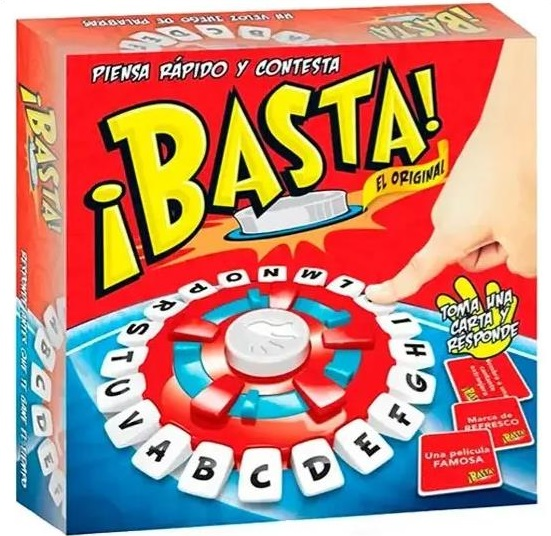
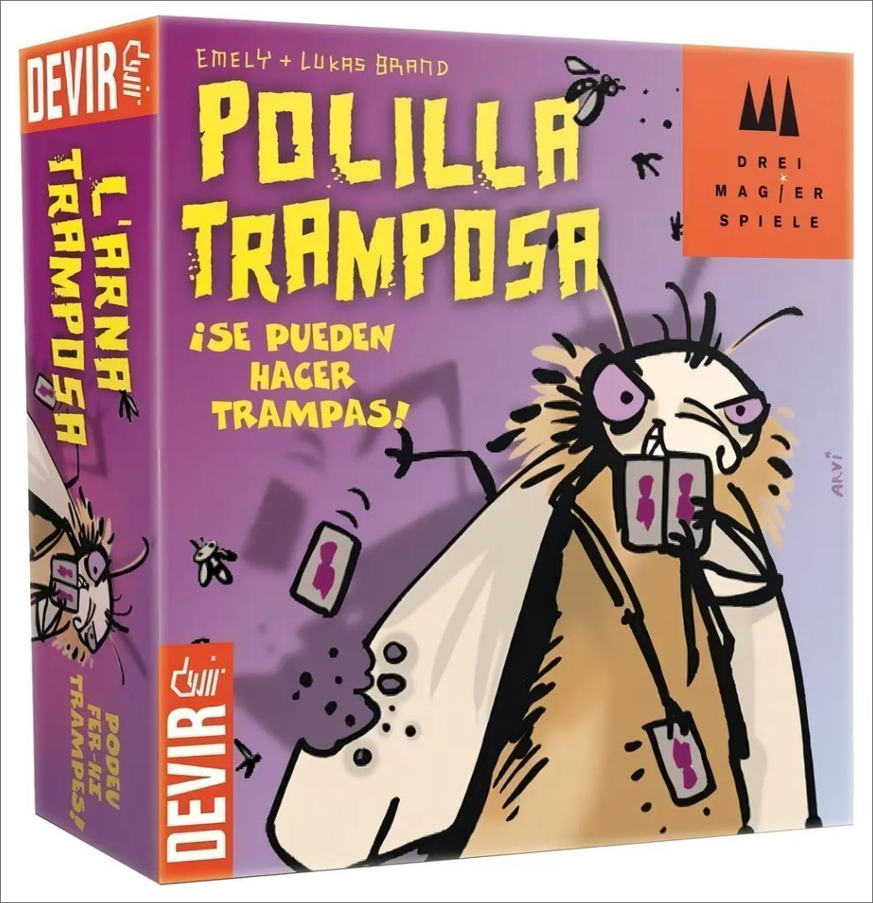
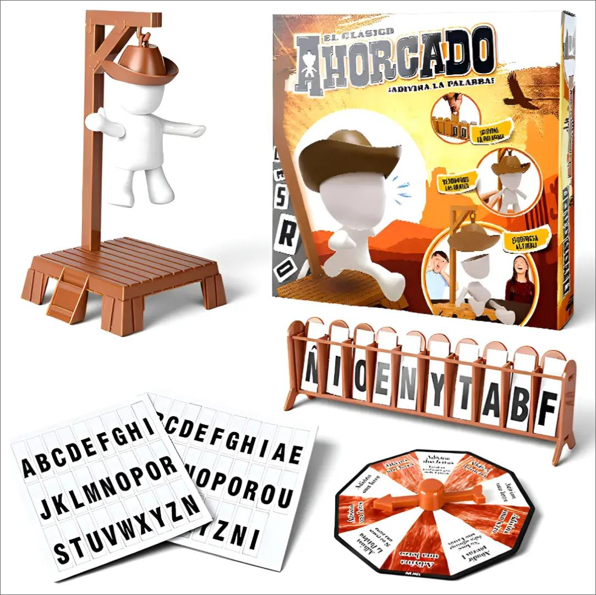

Catálogo de Familiares

Basta
Nuestro juego de mesa en español es perfecto para la familia. Apto para jóvenes y mayores, muy útil para principiantes de español, pensar rápido y encontrar la palabra correcta bajo presión de tiempo, bueno para mejorar el vocabulario y el tiempo. Fácil de Jugar.

La Polilla Tramposa
La gran sorpresa del 2012, ganador del prestigioso Deutscher Spiele preis Best Children’s Game. En este original juego, las trampas no solo no están prohibidas, sino que probablemente estarás obligado a hacerlas para ganar.

Ahorcado
Descubre el Juego De Palabras Magnético para La Familia, una experiencia divertida y educativa que reúne a amigos y familiares en torno a un tablero lleno de emoción. Este juego, diseñado para jugadores a partir de 6 años, es ideal para 2 a 6 participantes, lo que lo convierte en la opción perfecta para reuniones familiares o noches de juegos con amigos.